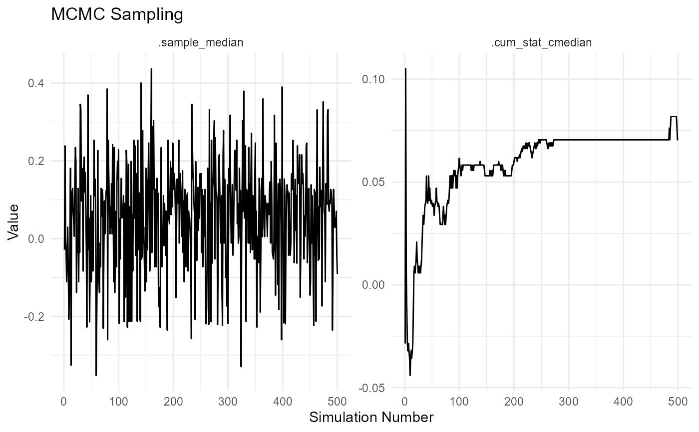

This function performs Markov Chain Monte Carlo (MCMC) sampling on the input data and returns tidy data and a plot representing the results.
Details
Perform MCMC sampling and return tidy data and a plot.
The function takes a data vector as input and performs MCMC sampling with the specified number of simulations. It applies user-defined functions to each MCMC sample and to the cumulative MCMC samples. The resulting data is formatted in a tidy format, suitable for further analysis. Additionally, a plot is generated to visualize the MCMC samples and cumulative statistics.
See also
Other Utility:
check_duplicate_rows(),
convert_to_ts(),
quantile_normalize(),
util_beta_aic(),
util_binomial_aic(),
util_cauchy_aic(),
util_chisq_aic(),
util_exponential_aic(),
util_f_aic(),
util_gamma_aic(),
util_generalized_beta_aic(),
util_generalized_pareto_aic(),
util_geometric_aic(),
util_hypergeometric_aic(),
util_inverse_burr_aic(),
util_inverse_pareto_aic(),
util_inverse_weibull_aic(),
util_logistic_aic(),
util_lognormal_aic(),
util_negative_binomial_aic(),
util_normal_aic(),
util_paralogistic_aic(),
util_pareto1_aic(),
util_pareto_aic(),
util_poisson_aic(),
util_t_aic(),
util_triangular_aic(),
util_uniform_aic(),
util_weibull_aic(),
util_zero_truncated_binomial_aic(),
util_zero_truncated_geometric_aic(),
util_zero_truncated_negative_binomial_aic(),
util_zero_truncated_poisson_aic()
Examples
# Generate MCMC samples
set.seed(123)
data <- rnorm(100)
result <- tidy_mcmc_sampling(data, "median", "cmedian", 500)
#> Warning: Setting '.num_sims' to less than 2000 means that results can be potentially
#> unstable. Consider setting to 2000 or more.
result
#> $mcmc_data
#> # A tibble: 1,000 × 3
#> sim_number name value
#> <fct> <fct> <dbl>
#> 1 1 .sample_median -0.0285
#> 2 1 .cum_stat_cmedian -0.0285
#> 3 2 .sample_median 0.239
#> 4 2 .cum_stat_cmedian 0.105
#> 5 3 .sample_median 0.00576
#> 6 3 .cum_stat_cmedian 0.00576
#> 7 4 .sample_median -0.0357
#> 8 4 .cum_stat_cmedian -0.0114
#> 9 5 .sample_median -0.111
#> 10 5 .cum_stat_cmedian -0.0285
#> # ℹ 990 more rows
#>
#> $plt

#>